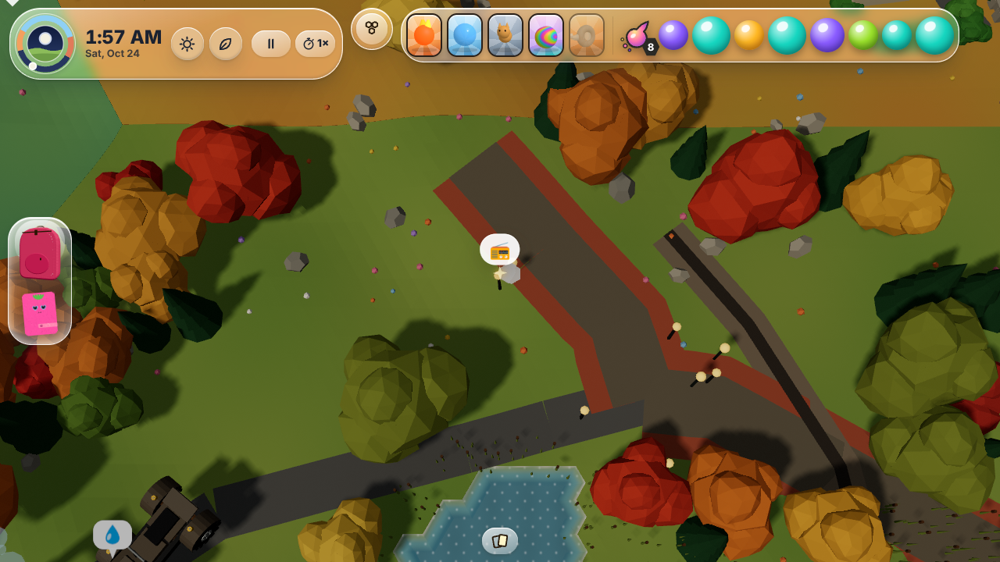
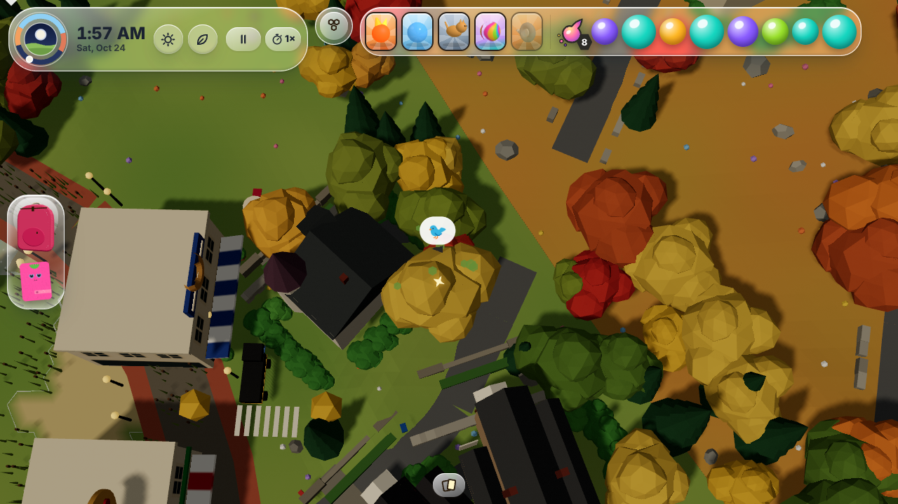
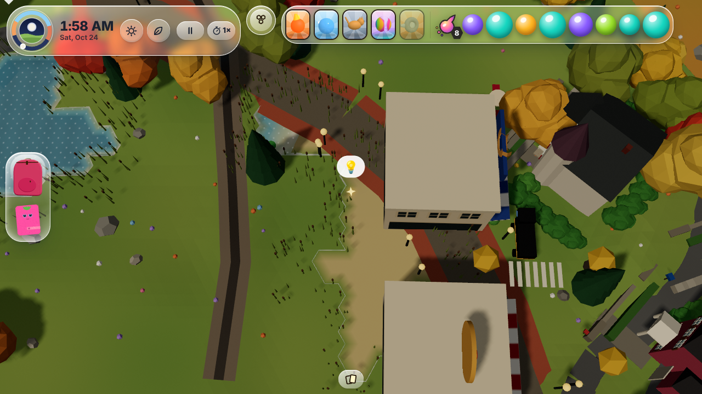
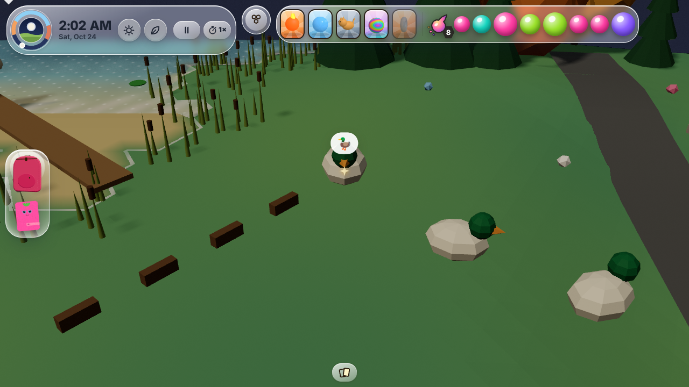
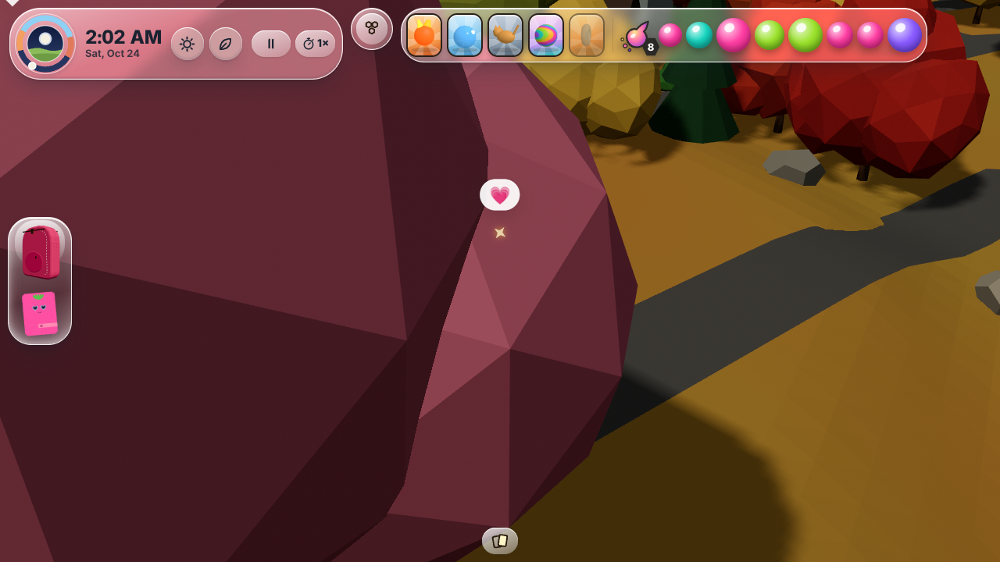
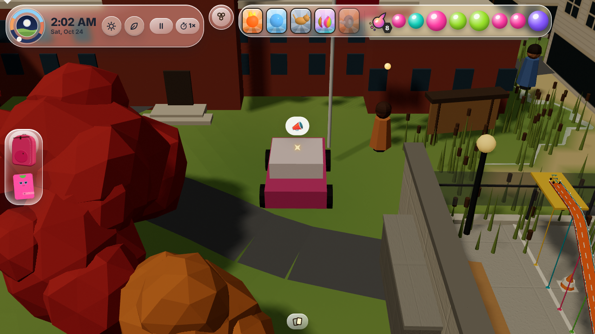

The town answers every tap
Drafted, not live yet. These are screenshots of real taps in the Winchester board from a headless test. Once it ships, it is at abbies.world.






Drafted, not live yet. These are screenshots of real taps in the Winchester board from a headless test. Once it ships, it is at abbies.world.





